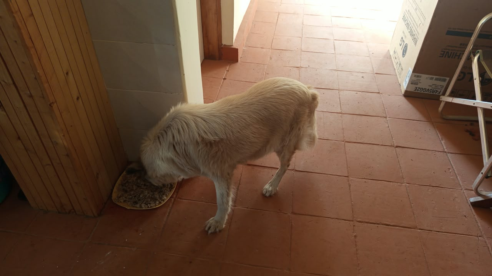

Mucheru World of Golf
Operations at Mucheru World of Golf on Monday, 19th October 2026 advanced key hydraulic, agronomic, and earthmoving milestones under the active on-site leadership of Mr. Gichuhi and Ken:
Golf Course Operational Highlights
1 lorry load of clean river sand was delivered to site. River sand application and leveling on Green 17 was fully completed to finished design contours. Coils of black HDPE piping were hauled from the Chaka Farms greenhouse and laid into perimeter pop-up sprinkler trenches. Heavy treated wooden posts were hauled via tractor-trailer (`ZJ 5334`) and assembled into temporary bridges across excavated trenches. Dam 3 repair was completed with the anchor trench backfilled and water held cleanly. Polythene liner repairs on Dam 2 advanced with technicians fixing damaged floor liner seams and perimeter crews excavating and tucking the liner into the surrounding berm anchor trench. Ground crew also cleared and smoothed the main collector drainage trench bed to ensure unimpeded gravity water flow toward the course hazard. Platform grading and contour refinement on Teeboxes 6 and 8 actively progressed under Mr. Gichuhi and Ken.
- River Sand Delivery (1 Lorry Load): 1 commercial lorry load of clean river sand was delivered to the course, supplying essential rootzone material directly to active putting greens.
- Green 17 River Sand Leveling Completed: Building on the initial spreading started yesterday, ground crews deployed landscape rakes and wheelbarrows to complete the spreading and surface leveling of river sand across the entire foundation of Green 17, achieving a smooth, uniform surface out to the liner edge.
- Temporary Trench Bridges Built with Hauled Posts: The red farm tipper trailer (`ZJ 5334`) hauled a full load of thick, treated wooden posts from the Chaka Farms greenhouse to the golf course. Ground crews positioned and wired the timber poles side-by-side across deep excavated trenches to create solid temporary crossing bridges for personnel, wheelbarrows, and equipment.
- HDPE Irrigation Pipe Haulage & Trench Placement: Coils of black HDPE pipe were transported from Chaka Farms greenhouse to the golf site and uncoiled directly into the pre-dug perimeter sprinkler trenches around putting greens, aligning lines with survey pegs for pop-up sprinkler installation.
- Dam 3 Polythene Liner Repair Completed: Repair works on Dam 3 were successfully completed. Crews tucked the black polythene geomembrane liner into the perimeter anchor trench and backfilled it with soil, securing the embankment as the dam cleanly retains stored water.
- Dam 2 Polythene Liner Floor Repairs & Anchor Trench Earthworks: Repair operations on Dam 2 advanced through coordinated tasks: technicians seamed and sealed damaged polythene liner connections on the dam bed, while perimeter crews excavated the surrounding anchor trench on the berm and tucked the liner firmly into place before backfilling.
- Main Collector Drainage Trench Bed Leveling: Manual personnel worked inside the excavated main drainage collector trench, clearing spoil, deepening channels, and precision-shaping the bed contours to guarantee unimpeded gravity runoff toward the course water hazard.
- Teeboxes 6 and 8 Platform Grading Continues: Manual crews continued earthwork grading, cutting, and contour refinement across the elevated launch platforms of Teeboxes 6 and 8, spreading and leveling red soil mounds with hoes, shovels, and wheelbarrows. The platforms are actively advancing toward finish grades and remain ongoing.
- Site Supervision & Technical Coordination: Mr. Gichuhi and Ken directed machine logistics, tractor haulage runs, trench bridge positioning, and precision green leveling throughout the day.
18-hole putting green status audit showing the latest work completed and current condition for each green as of October 19, 2026:
| Green | Current Technical & Agronomic State | Milestone Status |
|---|---|---|
| Green 1 | HDPE irrigation pipes laid and fitted inside perimeter sprinkler trenches (Oct 18). | Sprinkler Pipes Laid |
| Green 2 | HDPE irrigation pipes laid and fitted inside perimeter sprinkler trenches (Oct 18). | Sprinkler Pipes Laid |
| Green 3 | HDPE irrigation pipes laid and fitted inside perimeter sprinkler trenches (Oct 18). | Sprinkler Pipes Laid |
| Green 4 | Pop-up sprinkler and irrigation perimeter trenches dug along marked chalk line (Oct 14). | Sprinkler Trenches Complete |
| Green 5 | Ready. Fully established mature championship putting green turfgrass under active pop-up sprinkler irrigation conditioning. | Ready • Established Turf |
| Green 6 | Pop-up sprinkler trenches digging completed around green perimeter collar (Oct 15). | Sprinkler Trenches Complete |
| Green 7 | Drainage outlet trench connecting green 7 to main canal dug and leveled by manual crew (Oct 15). | Outlet Trench Dug • Leveled |
| Green 8 | Pop-up sprinkler trenches digging completed around green perimeter (Oct 15). | Sprinkler Trenches Complete |
| Green 9 | Orange drainage PVC pipe connected and outlet trench leveled leading to main canal (Oct 15). | PVC Connected • Trench Done |
| Green 10 | Pop-up sprinkler trenches digging completed around collar and surrounds (Oct 15). | Sprinkler Trenches Complete |
| Green 11 | Pop-up sprinkler trenches digging completed around green perimeter (Oct 15). | Sprinkler Trenches Complete |
| Green 12 | Pop-up sprinkler trenches digging completed around perimeter collar (Oct 15). | Sprinkler Trenches Complete |
| Green 13 | Pop-up sprinkler trenches digging completed along marked green perimeter (Oct 15). | Sprinkler Trenches Complete |
| Green 14 | Riversand application and surface leveling completed across the foundation (Oct 18). | Riversand Leveled |
| Green 15 | Pop-up sprinkler trenches digging completed around outer collar surrounds (Oct 15). | Sprinkler Trenches Complete |
| Green 16 | Pop-up sprinkler trenches digging completed around green perimeter collar (Oct 15). | Sprinkler Trenches Complete |
| Green 17 Today | Riversand application and surface leveling fully completed across foundation (Oct 19). | Riversand Leveled |
| Green 18 | Pop-up sprinkler trenches dug; riversand applied and leveled across green surface (Oct 14). | Riversand • Sprinkler Trench |
Comprehensive 18-hole championship teebox platform audit tracking earthwork leveling, structural embankments, and playing corridor alignments as of October 19, 2026:
| Teebox | Current Technical & Earthwork State | Platform Status |
|---|---|---|
| Tee 1 | Playing launch platform fully refined, contoured, and graded to final design elevation (Oct 14). | Refined & Graded |
| Tee 2 | Platform earthwork grading and surface refinement completely finished (Oct 15). | Refined & Graded |
| Tee 3 | Playing launch platform completely graded, leveled, and refined to final elevation (Oct 15). | Refined & Graded |
| Tee 4 | Championship launch platform completely graded, leveled, and refined to final elevation (Oct 15). | Refined & Graded |
| Tee 5 | Playing platform actively graded and refined with red soil next to 2nd main drainage trench (Oct 16). | Grading & Refining |
| Tee 6 Today | Platform surface grading and contour refinement actively continued by ground crew (Oct 19). | Grading & Refining |
| Tee 7 | Both number 7 teebox platforms actively reshaped, cut, and leveled by crew under Joe Kamau and supervisors (Oct 4). | Both Platforms Reshaped |
| Tee 8 Today | Championship launch platform surface grading and contour refinement actively continued (Oct 19). | Grading & Refining |
| Tee 9 | Playing launch platform grading and surface refinement actively continued by manual crew (Oct 16). | Refinement in Progress |
| Tee 10 | Playing launch platform shaping and surface refinement completely finished (Oct 13). | Platform Refined |
| Tee 11 | Playing launch platform grading and contour refinement completely finished (Oct 13). | Refinement Complete |
| Tee 12 | Both championship and forward platforms actively shaped, leveled, and refined to finished design elevation (Oct 8). | Shaped & Refined |
| Tee 13 | Playing platform earthworks completely finished, shaped, and refined to final design elevation and contours (Oct 7). | Finished & Refined |
| Tee 14 | Launch platform earthworks completely finished, shaped, and refined to final playing contour (Oct 7). | Finished & Refined |
| Tee 15 | Launch platform shaping completely finished; terrace cut to design elevation and precision leveled (Oct 6). | Platform Reshaped |
| Tee 16 | Surplus red soil moved onto platform; launch terrace completely reshaped and leveled (Oct 5). | Platform Reshaped |
| Tee 17 | Launch platform reshaped, cleared of brush, and graded to playing corridor alignment (Oct 6). | Platform Reshaped |
| Tee 18 | Championship launch platform surface grading, red soil leveling, and refinement underway (Oct 16). | Grading & Refining |
Operations Agronomy & Engineering Synthesis
Putting Greens & Irrigation Milestones: 1 lorry load of clean river sand was delivered and applied to Green 17, where surface leveling was fully completed across the foundation; black HDPE irrigation pipes were hauled from Chaka Farms and placed into perimeter pop-up sprinkler trenches; wooden posts were hauled and assembled into temporary bridges across excavated trenches; Dam 3 repair was 100% completed with the anchor trench backfilled and water held; Dam 2 liner repairs actively continue.
Championship Teebox Platforms: Teeboxes 6 and 8 actively continued earthwork grading and red soil contour refinement; Teeboxes 1, 2, 3, 4, 5, 7, 9, 10, 11, 12, 13, 14, 15, 16, 17, and 18 maintain established finished design grades.
Field video documentation capturing Monday, 19th October 2026 operations at Mucheru World of Golf: commercial river sand delivery and completed surface leveling on Green 17, installation of black HDPE piping inside green perimeter pop-up sprinkler trenches, tractor-trailer haulage of wooden posts from Chaka Farms greenhouse and construction of temporary crossing bridges over excavated trenches, completed liner repair and water retention in Dam 3, and ongoing polythene liner repair work inside Dam 2.
Sequential photographic field documentation capturing river sand leveling on Green 17, teebox platform earthworks, dam repairs, post haulage, trench bridge construction, and HDPE pipe installation at Mucheru World of Golf:

Green 17 River Sand Leveling Completed
Ground crew utilizing landscape rakes to complete the leveling of river sand across the entire foundation of Green 17, forming an even rootzone layer out to the liner edge.

Green 17 Aerial Agronomy & Pipe Placement
High-altitude drone aerial view displaying the completed river sand rootzone on Green 17, with black HDPE pipe routed through perimeter sprinkler trenches and orange conduits on site.

Green 17 Contour & Sprinkler Trench Overview
Aerial perspective of Green 17 showing the pristine teardrop sand profile framed by rich red soil collars, with HDPE piping placed along the outer perimeter trench run.

Manual HDPE Sprinkler Pipe Trench Fitting
Ground crew uncoiling and fitting black HDPE piping along the perimeter pop-up sprinkler trench encircling the green, aligning the run with grade pegs.

HDPE Irrigation Pipes Hauled to Golf Site
Three large coils of black HDPE piping unloaded on the grass at the golf site following haulage from storage at Chaka Farms greenhouse.

Wooden Posts Haulage from Chaka Farms
Red tractor trailer (`ZJ 5334`) transporting a heavy consignment of treated wooden posts along the farm road from the greenhouse to the golf course site.

Loaded Wooden Posts Trailer on Golf Site
Rear view of the loaded red tractor trailer on site carrying sturdy wooden posts destined for assembling temporary crossing bridges over trenches.

Wooden Posts Unloaded at Golf Site
Pile of sturdy treated wooden poles tipped and unloaded on site from trailer `ZJ 5334`, ready for bridge framing across excavated trenches.

Trench Bridge Assembly — Aerial Field View
Drone aerial capture showing ground personnel assembling and laying wooden posts side by side across the deep trench, creating safe crossing access across the fairway.

Temporary Trench Bridge Deck Assembly
Detailed view of treated timber poles laid side by side across the deep excavated trench and securely bound with wire to create a stable crossing bridge.

Trench Bridge Crossing Inspection
Wider perspective showing ground personnel inspecting the finished wooden bridge structure spanning the trench, complete with side vertical guide posts.

Main Collector Drainage Trench Bed Refinement
Drone aerial view of workers in the deep collector trench clearing spoil and smoothing the bed contours to ensure unobstructed gravity water drainage toward the course hazard.

Teeboxes 6 & 8 Earthwork Alignment — Aerial View
High-altitude aerial capture displaying Teeboxes 6 and 8 platform shaping adjacent to the open drainage canal, documenting earthwork contours and surrounding fairways.

Teeboxes 6 & 8 Platform Grading Continues
Manual crew actively cutting, shaping, and grading the red soil embankment across Teeboxes 6 and 8 using jembes, rakes, and wheelbarrows to establish finished platform elevations.

Teebox Platform Red Soil Spreading & Shaping
Workers spreading red soil mounds across the teebox playing surface from wheelbarrows, establishing uniform slope and elevation along the playing corridor.

Teebox 6 & 8 Platform Landscape Overview
Wide landscape view showing the teebox platform under active earthwork grading, with red soil stockpiles in the background and Dam 2 visible in the distance.

Teebox Platform Earthwork Refinement
Elevated perspective of the teebox platform undergoing manual leveling and compaction, shaping the launch terrace to design specifications.

Dam 2 Floor Polythene Liner Repair — Aerial View
Drone aerial capture showing a specialist technician working on the floor of Dam 2, adjusting and repairing damaged polythene liner connections and seams.

Dam 2 Liner Connection Seaming
Elevated view of Dam 2 bed restoration operations, documenting precision seam realignment and leak repairs on the heavy black geomembrane.

Dam 2 Perimeter Anchor Trench Excavation
Drone aerial view of manual crew excavating the perimeter anchor trench along the top berm of Dam 2 to receive and anchor the outer edge of the polythene liner.

Dam 2 Berm Liner Tucking into Anchor Trench
Workers along the upper berm of Dam 2 carefully tucking the black polythene geomembrane liner into the excavated perimeter anchor trench prior to soil backfill.

Dam 2 Water Boundary Liner Sealing
Technicians working inside Dam 2 using a wooden plank across the embankment slope to adjust, seam, and seal the black liner in shallow water.

Dam 2 Polythene Liner Repair Overview
Panoramic view across Dam 2 showing the extensive black liner, the central island with vegetation, and workers sealing liner seams along the water boundary.

Dam 3 Liner Repair & Anchor Trench Backfill
Ground crews on the perimeter berm tucking the black polythene liner into the anchor trench and backfilling with soil to secure the reservoir lining.

Dam 3 Repair Completed — Water Retention
Dam 3 with liner repair fully finished, holding a large volume of clean water reflecting the sky with the perimeter anchor trench completely secured.
Chaka Farms
Operations across Chaka Farms on Monday, 19th October 2026 maintained strict quantitative dairy reconciliation alongside attentive canine husbandry, infrastructure plumbing, livestock dip sanitization, and landscape development under the oversight of Kamandau, Willy, Ken, Kimondo, Mwangi, Margaret, and Monica:
Farm Operational Highlights
Dairy production yielded 8.5 Litres gross harvest (4.0L morning + 4.5L evening), with 7.5 Litres dispatched for commercial sales and 1.0 Litre distributed for routine internal farm allocations (0.5L Maasai + 0.5L Gladys), completely reconciled strictly in Litres with zero discrepancy. Willy carried out canine kennel cleaning, off-leash walking, exercise routines, paw command training, and kennel manners observation, repaired a toilet waste pan connector pipe, and trimmed the compound flower hedges. Ken oversaw the draining and cleaning of the concrete goat plunge dip. Kimondo and Mwangi continued building the tiered rock garden with red soil works. Margaret and Monica maintained general compound and grounds cleanliness.
- 100% Reconciled Dairy Harvest (8.5 Litres): Kamandau recorded 8.5 Litres gross milk yield across daily milking operations (4.0L morning session + 4.5L evening session). Commercial dispatches totaled 7.5 Litres (3.0L morning + 4.5L evening). Routine internal farm disbursements accounted for 1.0 Litre (0.5L Maasai + 0.5L Gladys staff ration), achieving 100% quantitative accounting reconciliation strictly in Litres with zero variance.
- Canine Care, Exercise & Manners: Willy executed full kennel cleaning and sanitation, conducted structured off-leash walking and exercise routines across the farm fields, practiced paw command responses, and reinforced proper kennel manners.
- Plumbing Waste Pipe Repair: Willy repaired a leaking toilet waste pipe in the farm bathroom, installing a new flexible white pan connector pipe to ensure watertight drainage and reliable sanitation.
- Ornamental Hedge & Flower Trimming: Willy trimmed and pruned the golden Duranta hedge and flowering shrubs along the estate driveway and residence perimeter, raking up trimmings to maintain a tidy appearance.
- Goat Dip Cleaning & Restoration: Under Ken's supervision, the concrete livestock plunge dip trough was cleaned down, scooping and draining out old dirty water and preparing clean water drums for fresh dipping solution.
- Rock Garden Red Soil Works: Kimondo and Mwangi advanced construction of the tiered rock garden, hauling rich red volcanic topsoil via wheelbarrows into the stone-bordered terraces aligned with guide strings.
- Compound Cleanliness & Maintenance: Margaret and Monica maintained compound cleanliness across the yards, lawn borders, and facility perimeters.
Official quantitative dairy milking harvest and sales ledger for Monday, 19th October 2026, recording gross yields, commercial dispatches, and internal farm disbursements strictly in Litres:
| Category / Transaction | Morning Session | Evening Session | Daily Total |
|---|---|---|---|
| Gross Milk Harvested | 4.0 Litres | 4.5 Litres | 8.5 Litres |
| Commercial Milk Sales (Dispatched) | 3.0 Litres | 4.5 Litres | 7.5 Litres |
| Internal Farm Allocation — Maasai | 0.5 Litres | — | 0.5 Litres |
| Internal Farm Allocation — Gladys (Staff) | 0.5 Litres | — | 0.5 Litres |
| Internal Farm Allocation — Goat Kids (Weaned) | 0.0 Litres | 0.0 Litres | 0.0 Litres |
| Total Volume Accounted For | 4.0 Litres | 4.5 Litres | 8.5 Litres (100% Reconciled) |
Dairy Accounting & Farm Operations Note
Total gross milk harvested of 8.5 Litres is fully accounted for by 7.5 Litres sold commercially (3.0L morning + 4.5L evening) and 1.0 Litre in routine farm allocations (0.5L Maasai + 0.5L Gladys). In accordance with reporting rules, milk volumes are recorded strictly in Litres, and Maasai is designated strictly as Maasai. In the farm infrastructure section, kennel care, plumbing pipe repair, hedge trimming, goat dip cleaning, and rock garden soil placement were successfully executed.
Photographic field documentation capturing rock garden red soil works, plumbing pipe repair, goat dip cleaning, and flower hedge trimming across Chaka Farms:

Rock Garden Construction — Red Soil Spreading
Kimondo and Mwangi transporting rich red volcanic topsoil in wheelbarrows into the natural stone-tiered garden beds under the shade of trees.

Tiered Rock Garden Soil Placement
A worker tipping a wheelbarrow load of red soil into the stone-bordered terrace, filling contoured beds along alignment guide strings.

Plumbing Repair — Toilet Waste Pipe
A newly fitted flexible white toilet waste pan connector pipe installed in the farm bathroom, connecting the toilet bowl outlet to the floor drain pipe.

Goat Plunge Dip Cleaning & Drainage
The concrete livestock plunge dip trough undergoing cleaning and bailing out of old dirty water down to bare concrete to prepare for fresh dipping solution.

Goat Dip Raceway & Water Preparation
View down the sheltered wooden livestock handling chute and clean concrete plunge trough, with a large blue water drum positioned for refilling.

Compound Flower Hedge Trimming
Immaculately trimmed golden Duranta hedge and flowering shrubs bordering the graveled estate driveway and residence building.

Hedge Pruning & Pathway Maintenance
Grounds personnel trimming hedges and sweeping up plant trimmings along the stone walkway leading toward the modern farm residence.
Kabete Residence
Operations and daily updates at Kabete Residence on Monday, 19th October 2026 were overseen and shared by Njoki, covering car parking canopy cleaning, fireplace SQ cold room beam demolition and shutter formwork base setup, material offloading, boundary fence trimming, garden flower watering, playground irrigation, estate lawn sprinkling, pergola light fixture cleaning, leaf sweeping, and attentive domestic pet care:
Estate Maintenance, Fireplace SQ Formwork & Grounds Highlights
Maintenance personnel thoroughly cleaned the car parking rooftop canopy and painted steel framework. At the outdoor fireplace project, construction workers demolished and chiseled away the concrete cold room beam joining the SQ, while carpenters set up the timber shutter formwork base for the slab. An Isuzu pickup truck delivered and was offloaded with film-faced plywood shutter boards and timber support planks. The gardener pruned and trimmed dense vegetation along the boundary fence using a stepladder, watered flowers along the living stone retaining wall using a hose pipe, and irrigated the playground lawn using rotary sprinklers. Sprinklers also hydrated the main estate lawns, pergola ceiling light fixtures were wiped clean, grounds crew swept leaves from walkways, and domestic pets (Ajabu, Reo, and Aiko) received their daily care and meals (Mocha monitored).
- Car Parking Rooftop Cleaning: Maintenance personnel thoroughly washed and cleaned the car parking canopy rooftop fabric and painted steel support framework adjacent to the main house tiled roof, removing dust, leaves, and accumulated dirt.
- Demolition of Cold Room Beam Joining SQ at Fireplace: Workers in safety gear undertook manual chiseling and demolition of the concrete cold room beam joining the staff quarters (SQ) at the outdoor fireplace site to prepare the structural junction for ongoing construction.
- Setting Up Shutter Formwork Base at SQ Fireplace: Carpenters and builders measured, leveled, and assembled timber props and film-faced plywood decking to construct the shutter formwork base for the concrete foundation slab at the SQ fireplace extension.
- Offloading Delivery Pickup Truck: Ground personnel offloaded an Isuzu pickup truck carrying construction supplies, including sheets of film-faced plywood shuttering boards (TY Wood) and timber support posts required for the fireplace formwork.
- Boundary Fence Vegetation Trimming: The gardener mounted a stepladder along the estate boundary fence line to prune, trim, and clear overgrown hedge branches and trailing foliage.
- Watering Flowers at Main House with Hose Pipe: The gardener utilized a green hose pipe to thoroughly water the flowering plants and shrubs embedded along the multi-tiered living stone retaining wall adjoining the main house.
- Playground Lawn Sprinkler Irrigation: The gardener activated and managed rotary lawn sprinklers across the expansive playground lawn, providing deep hydration to maintain green recreational turfgrass.
- Continuous Lawn Sprinkler Irrigation: Additional rotary and impact sprinklers operated across the upper and lower garden terraces near the main veranda, ensuring comprehensive water coverage across the estate grounds.
- Pergola Light Fixture Cleaning: Maintenance personnel used a wooden ladder under the outdoor timber pergola lounge to dust and wipe clean hanging wire-basket lamp fixtures and electrical pendants.
- Grounds & Pathway Leaf Sweeping: Grounds staff meticulously raked and cleared dry fallen leaves from the lawns, stone verandas, and paved walkways around the main residence.
- Ajabu the Golden Retriever Leash Walking & Feeding: Ajabu was taken on an attentive on-leash walk along the red interlocking paver pathways and garden perimeters, followed by his evening dinner meal served inside the residence.
- Resident Cat Evening Feeding (Reo & Aiko; Mocha Monitored): Resident cats Reo and Aiko were fed side-by-side from stainless steel feeding bowls on the terracotta tiled floor; household staff noted Mocha did not appear for dinner and are maintaining a continuous watch for her return.
Photographic field documentation capturing car parking canopy cleaning, fireplace SQ cold room beam demolition and formwork setup, pickup offloading, boundary fence trimming, garden flower and playground irrigation, pergola lighting maintenance, grounds leaf sweeping, and resident pet care at Kabete Residence:

Pickup Truck Formwork Material Delivery
Site worker standing on the rear bed of an Isuzu 4x4 pickup truck untying and offloading timber planks and shuttering plywood boards for construction.

Offloading Shuttering Plywood Sheets
Worker in a red shirt unloading large film-faced marine shutter plywood sheets (TY Wood) from the back of the Isuzu pickup truck.

Transporting Shutter Boards to Worksite
Two site workers carefully carrying a full sheet of film-faced shutter plywood away from the Isuzu pickup toward the SQ fireplace worksite.

Cold Room Beam Demolition at SQ Fireplace
Construction workers in high-visibility safety vests manually chiseling and demolishing the reinforced concrete cold room beam joining the staff quarters (SQ) at the outdoor fireplace.

Setting Up Shutter Formwork Base at SQ
Carpenter checking alignment and positioning film-faced plywood shutter decking over vertical timber support props at the fireplace SQ slab foundation.

Shutter Formwork Base Slab Assembly
Overhead view of the assembled timber formwork falsework and plywood deck laid out across the trench excavation for the SQ fireplace base slab.

SQ Fireplace Base Slab Decking & Rebar
Film-faced plywood panels secured across timber runners with starter rebar columns in position, ready for reinforcement tying and slab formwork completion.

Car Parking Rooftop Canopy Cleaning
View of the car parking shade canopy and painted brown steel structure following thorough washing and removal of fallen leaves, dust, and debris.

Cleaned Carport Canopy & Roofline
Wide perspective showing the pristine, cleaned carport fabric roof and framing set beneath clear skies alongside the main house tile roof and rooftop solar panels.

Pergola Pendant Light Cleaning
Maintenance staff on a wooden step ladder wiping down and cleaning the hanging wire-basket ceiling light fixtures beneath the timber pergola roof.

Pergola Lounge Terrace Maintenance
Wide view of the outdoor pergola lounge showing stone half-walls, lounge furniture, potted Anthuriums, and staff cleaning overhead lights.

Boundary Fence Trimming from Step Ladder
Gardener in Green Sol uniform standing on an aluminum step ladder pruning and trimming back overgrown trees, hedges, and vines along the boundary fence.

Perimeter Fence Foliage Pruning
Close-up view of the gardener reaching up into the dense boundary tree canopy to prune branches and maintain a clean perimeter property line.

Watering Flowers Along Retaining Wall
Gardener using a green garden hose pipe to irrigate flowering plants, ornamental grasses, and palm trees growing along the terraced living stone retaining wall near the main house.

Playground Lawn Sprinkler Irrigation
Gardener overseeing the rotary sprinkler spraying fine water droplets across the playground lawn, ensuring even hydration across the recreational grass turf.

Main Lawn Sprinkler Irrigation
Lawn sprinklers operating across the manicured green lawn near the main house veranda, providing essential moisture to the turfgrass.

Active Lawn Hydration Cycle
Continuous arc spray from the rotary sprinkler system delivering balanced moisture coverage across the residential lawn.

Sunken Terrace Lawn Sprinkler
Sprinkler irrigation operating along the lower sunken lawn terrace adjacent to the stone retaining wall, palm trees, and tiled patio walkway.

Swept Lawn Near Main House
Immaculately swept lawn free of fallen leaves and debris, framed by blooming white Agapanthus flowers and perimeter garden foliage.

Veranda Garden Grounds Cleanliness
Pristine lawn and stone porch walkway following leaf sweeping, framed by dense ivy hedges and tropical garden trees.

Manual Leaf Raking Along Garden Border
Groundsman using a green leaf rake to clear dry fallen leaves along the garden hedge border and stone walkway adjoining the main house.

Patio Lawn Border Leaf Collection
Groundsman raking fallen leaves on the lawn edge bordering the paved outdoor dining patio and garden shrubs.

Ajabu Leash Walking on Paved Grounds
Ajabu the Golden Retriever on a patterned leash walking along the interlocking concrete paver pathways during his daily garden exercise.

Ajabu Garden Perimeter Exploration
Ajabu exploring and sniffing around a tree stump along the garden border under handler supervision on leash.

Ajabu Dinner Feeding Inside House
Ajabu the Golden Retriever enjoying his evening dinner portion from his yellow feeding dish on the tiled floor inside the residence.

Reo & Aiko Dinner Feeding (Mocha Absent)
Resident cats Reo and Aiko eating their evening meal side by side from stainless steel bowls with water bowl nearby; Mocha was absent and continues to be monitored.